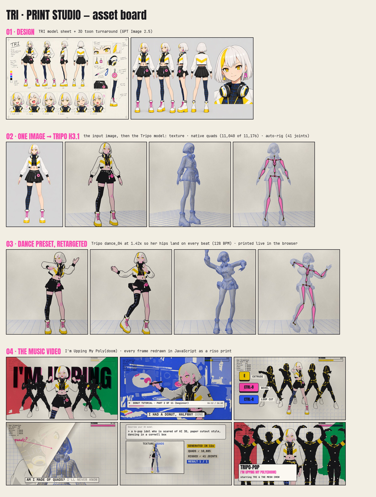

Watch
How TRI was made
- 01 · ImageOne clean A-pose front view of TRI (GPT Image 2.5), made from her model sheet.
- 02 · Tripo H3.1Image → 3D. A textured model, plus a native quad mesh: 11,176 faces, 11,040 of them quads.
- 03 · Auto-rigTripo rigs her in one call: 41 joints with skin weights, no hand weight painting.
- 04 · RetargetTripo's dance_04 preset, sped up 1.42× so her hips hit every beat at 128 BPM.
- 05 · PrintThe textured model is rendered, then traced into riso ink layers like the rest of the video. The quads and the rig are skinned and printed live, here, in your browser.

Credits
Made by Matt (@Matt_xingbao) with Claude Opus 5.5 · 3D by Tripo (H3.1, auto-rig, animation presets) · footage reference Seedance 2.5 · designs GPT Image 2.5 and Nano Banana Pro · song ElevenLabs.
Parodies all the way down: "P(doom)" by osmarks · Claude-Pop by @slimer48484 · the Opus music video by @other__reality · the one-prompt remake by @donaldjewkes.
Built for Tripothon S1 · Film / VFX.